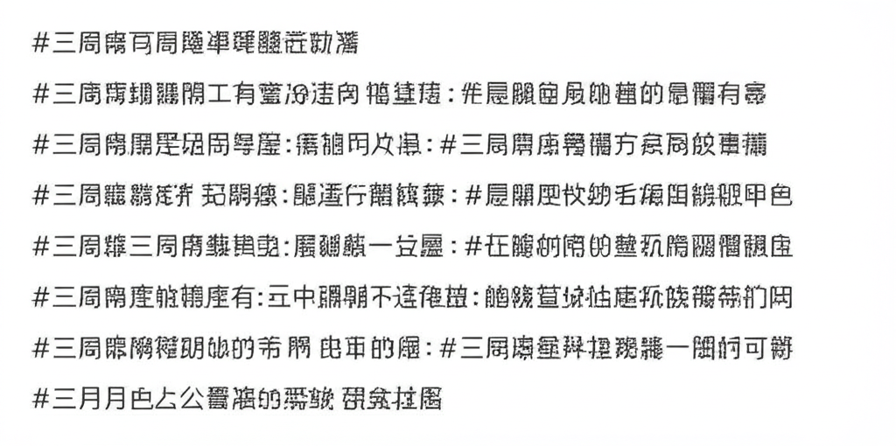

# 減重、健康與時事新聞摘要
## 引言
本文整理了近期網路新聞，涵蓋減重、健康醫療、時事政治以及寵物健康等面向。從減重手術的案例、三高的健康風險、黑熊保育的新聞到潛艦海測的延期，希望能提供讀者一個快速掌握各領域重要資訊的管道。
## 主體內容
### 第一點：減重與健康醫療
聯合新聞網上的「減肥」標籤下，彙集了許多關於體重管理的文章。其中，三軍總醫院的減重代謝手術暨體重管理中心備受關注，強調體重控制不僅僅是為了外觀，更關乎整體健康的改善。一則新聞報導一名患者接受縮胃與腸繞道術，成功減去100公斤，並緩解了共病。同時，健康醫療網也刊登了關於「三高」連鎖危機的文章，提醒民眾重視高血壓、高血糖和高血脂的風險，以及它們可能導致的心血管疾病、腦中風等併發症。三總也協助患者從178公斤減重至88公斤，顯示專業醫療團隊對於體重管理的貢獻。
### 第二點：時事政治與生態保育
關於時事政治，中央社報導了海鯤號潛艦海測延期的消息。國防部長顧立雄表示，台船正在改善缺失，海軍要求確保改善項目達到安全要求才會進行海測，目前尚無法確定日期。在生態保育方面，林業保育署發布了關於花蓮卓溪黑熊槍擊事件的新聞稿，強調保護黑熊的重要性。這隻黑熊體重高達百餘公斤，近期多次接近部落，並已習慣於掠食犬隻，這也突顯了人與野生動物衝突的複雜性。
### 第三點：寵物健康與在地資訊
寵物健康醫療網提供了寵物健康的相關資訊，由獸醫師、寵物行為專家和健康管理專家提供專業知識，為寵物帶來最佳的健康和福祉。嘉義縣鹿草鄉的Facebook社團則分享了在地診所提供的體重管理特別門診資訊，讓有需要的民眾可以就近尋求協助。
## 結論
本次新聞摘要涵蓋了減重與健康醫療、時事政治與生態保育、以及寵物健康與在地資訊等多元面向。從個人健康管理到國家重大政策，希望透過這些資訊，能讓讀者對近期發生的重要事件有更全面的了解。